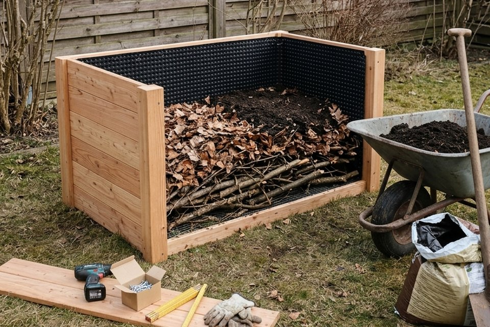

Hochbeet selber bauen ab 130 €
Ein Hochbeet aus Lärchenholz (ca. 120 × 80 × 80 cm) ist an einem halben Tag gebaut. Selbst gebaut ist es oft günstiger als ein Bausatz – und genau so groß, wie der Garten es braucht. Im Februar bauen, ab März pflanzen.
Anleitung in 6 Schritten
1. Den Platz wählen
Sonnig, eben und am besten in Nord-Süd-Richtung, damit beide Seiten Sonne bekommen. In der Nähe eines Wasseranschlusses.
2. Boden vorbereiten
Die Grasnarbe abstechen und ein verzinktes Wühlmausgitter auslegen – es ragt an allen Seiten etwas über.
3. Rahmen bauen
Die Bretter mit Edelstahlschrauben an vier Eckpfosten (7 × 7 cm) schrauben, Reihe für Reihe von unten nach oben. Edelstahl rostet nicht und verfärbt das Holz nicht.
4. Innen mit Noppenfolie auskleiden
Die Folie innen an die Bretter tackern, Noppen zum Holz. So bleibt eine Luftschicht, das Holz trocknet und hält länger. Unten offen lassen, damit Wasser abläuft.
5. In Schichten füllen
Von unten nach oben: ca. 30 cm Äste und Zweige, 15 cm Laub und Rasenschnitt, 15 cm grober Kompost, oben 20–30 cm gute Pflanzerde. Äste und Laub aus dem eigenen Garten kosten nichts.
6. Setzen lassen
Die Füllung sackt in den ersten Wochen um einige Zentimeter. Vor dem Pflanzen mit Erde auffüllen.
Materialliste
| Was | Menge | ca. Preis |
|---|---|---|
| Lärchenbretter, ca. 2,8 cm stark | ca. 24 lfm | 60–100 € |
| Kantholz für Eckpfosten 7 × 7 cm | 4 × 90 cm | 10–20 € |
| Edelstahlschrauben | ca. 100 | 10–15 € |
| Noppenfolie | ca. 4 × 1 m | 10–20 € |
| Wühlmausgitter verzinkt | ca. 1,5 m² | 10–15 € |
| Pflanzerde + Kompost (nur obere Schichten) | ca. 250 l | 30–80 € |
Richtwerte für Deutschland, Stand November 2026. Die Preise schwanken je nach Händler und Saison.
Was kostet das Hochbeet?
Ab ca. 130 €: mit Ästen und Laub aus dem eigenen Garten als Füllung.
Komplett mit gekaufter Füllung: ca. 130–250 €.
Werkzeug: Akkuschrauber, Säge (oder Zuschnitt im Baumarkt), Tacker, Zollstock.
Häufige Fragen
Welches Holz ist am besten?
Lärche und Douglasie sind von Natur aus witterungsbeständig und brauchen keine Chemie. Kein druckimprägniertes Holz für Gemüse verwenden.
Lohnt sich Selberbauen gegenüber einem Bausatz?
Preislich oft ja, vor allem bei Wunschmaßen. Wer es schnell möchte: Hochbeet aus Holz, Metall oder WPC im Vergleich.